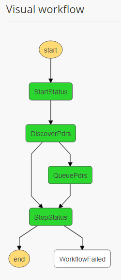

Science Investigator-led Processing Systems (SIPS)
The Cumulus ingest workflow supports the SIPS workflow. In the following document, we'll discuss what a SIPS workflow is and how to set one up in a Cumulus instance.
In this document, we assume the user already has a provider endpoint configured and ready with some data to ingest. We'll be using an S3 provider and ingesting from a MOD09GQ collection.
Setup
Provider
We need to have a provider from whom data can be ingested. Our provider is an S3 provider hosted in the cumulus-test-internal bucket.

Collection
We need to build a collection. Details on collections can be found here. The following collection will have MOD09GQ as a collection name, 006 as a version, and is configured to pull PDRs from ${bucket}/cumulus-test-data/pdrs in S3 (where ${bucket} is configured in the provider).
{
"queriedAt": "2018-08-03T16:44:25.919Z",
"name": "MOD09GQ",
"version": "006",
"process": "modis",
"sampleFileName": "MOD09GQ.A2017025.h21v00.006.2017034065104.hdf",
"dataType": "MOD09GQ",
"granuleIdExtraction": "(MOD09GQ\\..*)(\\.hdf|\\.cmr|_ndvi\\.jpg)",
"createdAt": 1531324194001,
"granuleId": "^MOD09GQ\\.A[\\d]{7}\\.[\\S]{6}\\.006\\.[\\d]{13}$",
"provider_path": "cumulus-test-data/pdrs",
"files": [
{
"bucket": "protected",
"regex": "^MOD09GQ\\.A[\\d]{7}\\.[\\S]{6}\\.006\\.[\\d]{13}\\.hdf$",
"sampleFileName": "MOD09GQ.A2017025.h21v00.006.2017034065104.hdf",
"url_path": "{cmrMetadata.Granule.Collection.ShortName}/{extractYear(cmrMetadata.Granule.Temporal.RangeDateTime.BeginningDateTime)}/{substring(file.name, 0, 3)}"
},
{
"bucket": "private",
"regex": "^MOD09GQ\\.A[\\d]{7}\\.[\\S]{6}\\.006\\.[\\d]{13}\\.hdf\\.met$",
"sampleFileName": "MOD09GQ.A2017025.h21v00.006.2017034065104.hdf.met"
},
{
"bucket": "protected-2",
"regex": "^MOD09GQ\\.A[\\d]{7}\\.[\\S]{6}\\.006\\.[\\d]{13}\\.cmr\\.xml$",
"sampleFileName": "MOD09GQ.A2017025.h21v00.006.2017034065104.cmr.xml"
},
{
"bucket": "public",
"regex": "^MOD09GQ\\.A[\\d]{7}\\.[\\S]{6}\\.006\\.[\\d]{13}_ndvi\\.jpg$",
"sampleFileName": "MOD09GQ.A2017025.h21v00.006.2017034065104_ndvi.jpg"
}
],
"duplicateHandling": "replace",
"updatedAt": 1533313794693,
"url_path": "{cmrMetadata.Granule.Collection.ShortName}/{substring(file.name, 0, 3)}",
"timestamp": 1533313798525,
"stats": {
"running": 0,
"completed": 0,
"failed": 2,
"total": 2
}
}
Rule
Finally, let's create a rule. In this example we're just going to create a onetime throw-away rule that will be easy to test with. This rule will kick off the DiscoverAndParsePdrs workflow, which is the beginning of a Cumulus SIPS workflow.
{
"name": "s3_provider_rule",
"workflow": "DiscoverAndQueuePdrs",
"provider": "s3_provider",
"collection": {
"name": "MOD09GQ",
"version": "006"
},
"rule": {
"type": "onetime"
},
"state": "ENABLED",
"tags": [
"test"
]
}
Note: A list of configured workflows exists under the "Workflows" in the navigation bar on the Cumulus dashboard. Additionally, one can find a list of executions and their respective status in the "Executions" tab in the navigation bar.
DiscoverAndQueuePdrs Workflow
This workflow will (as the name might suggest) discover PDRs and queue them to be processed. Duplicate PDRs will be dealt with according to the configured duplicate handling setting in the collection.
- DiscoverPdrs - npm package, source
- QueuePdrs - npm package, source

Example configuration for this workflow can be found in the DiscoverAndQueuePdrs object defined in Cumulus core's example
ParsePdr Workflow
The ParsePdr workflow will parse a PDR, queue the specified granules (duplicates are handled according to the duplicate handling setting) and periodically check the status of those queued granules. This workflow will not succeed until all the granules included in the PDR are successfully ingested. If one of those fails, the ParsePdr worklfow will fail. NOTE that ParsePdr may spin up multiple IngestGranule workflows in parallel, depending on the granules included in the PDR.
- ParsePdr - npm package, source
- QueueGranules - npm package, source
- CheckStatus - npm package, source

Example configuration for this workflow can be found in the ParsePdr object defined in Cumulus core's example
IngestGranule Workflow
The IngestGranule workflow processes and ingests a granule and posts the granule metadata to CMR.
- SyncGranule - npm package, source
- ProcessingStep - The processing step does not come from Cumulus core. The "AsterProcess," "ModisProcess," and "LegacyProcess" steps in the workflow picture below are examples of custom processing steps.
- CmrStep - npm package, source
Note: Hitting CmrStep is not required and can be left out of the processing trajectory if desired (for example, in testing situations).

Example configuration for this workflow can be found in the IngestGranule object defined in Cumulus core's example
Summary
In this cookbook we went over setting up a collection, rule, and provider for a SIPS workflow. Once we had the setup completed, we looked over the Cumulus workflows that participate in parsing PDRs, ingesting and processing granules, and updating CMR.